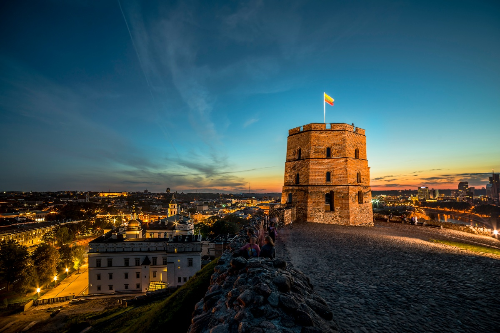

The symbol of Vilnius is visible from many spots in the Old Town and is portrayed in numerous works of art. It is one of the best places to see the magnificent panoramas of Vilnius. Climb Gediminas' Hill and admire the sunset or go up even higher to the top of the Gediminas Tower for more spectacular views. More information here
Gediminas Castle
More Info
Gediminas’ Castle Tower is the remaining fortification tower of the Upper Castle. Legend has it that the Grand Duke Gediminas dreamt of an Iron Wolf howling at the top of this hill, which he took as a prophecy of the great city that would one day stand in this place. The hill is where he eventually built a wooden castle. Grand Duke Vytautas completed the city’s first brick castle in 1409. Gediminas’ Tower has changed purposes since then, including being used as the city’s first telegraph building in 1838. The Lithuanian flag was first flown at the top of the tower a century ago. The Vilnius Castle Museum was opened in 1960, and in 1968 it became a subdivision of the Lithuanian National Museum.
Find more on Gediminas castleTrakai Historical National Park
The castle is famous for its gothic architecture and its special location – it stands on an island on Lake Galve, one of the deepest lakes in Lithuania. The view of the historic structure is straight out of a fairy tale. You can reach the castle by crossing the long wooden bridge. In the winter the lake freezes over and becomes a natural skating rink. You can also take in a special view of the castle from a yacht. Visit the museum inside the castle to explore the exhibitions of the Grand Dukes of Lithuania, various archaeological findings and artefacts, as well as a collection of art. In the summer there are medieval festivals as well as various events and concerts in the castle’s courtyard.
Find more on Trakai castleVilnius Tower
Visitors can ride the elevator to the top of the TV tower and look out over Vilnius Old Town, Vingis Park, and the neighboring city of Elektrėnai from the circular observation platform. For the full experience, book a table at the revolving restaurant, and enjoy lunch or dinner with an ever-changing view of the city.
TFor locals, the Vilnius TV Tower is more than just a notable landmark; it’s also an important symbol of resistance. In 1991, during Lithuania’s fight for independence from the Soviet Union, crowds of unarmed Lithuanian civilians turned out to protect the TV tower from being taken over by Soviet troops. The ensuing events saw 14 civilians lose their lives and more than 700 injured. Today, a memorial and exhibition is dedicated to them, located on the ground floor of the tower.
Find more on Vilnius Tower